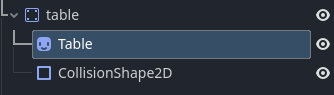
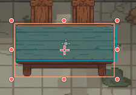

Lección 5: La Física y la Solidez del Mundo
Hasta ahora, nuestro juego es puramente visual: Aina puede atravesar paredes, casas y árboles porque los objetos son "transparentes" para el motor de física. En esta lección aprenderemos a darles cuerpo y volumen.
1. El Cuerpo Físico: ¿Quién tiene derecho a chocar?
En Godot, una imagen (Sprite2D) no tiene consistencia. Para que un objeto pueda interactuar
con
otros, debe estar "dentro" de un nodo de Cuerpo Físico. Pensad en el cuerpo como el
esqueleto
invisible que le dice al motor cómo se tiene que mover el objeto.
Los 3 tipos de cuerpos que usaremos:
- StaticBody2D (Cuerpos estáticos): Para objetos que no se mueven nunca, como una mesa, una roca o un árbol. Están ahí para bloquear el paso.
- CharacterBody2D (Cuerpos de personaje): El que ya hemos usado para Aina y Blub. Son cuerpos hechos para moverse por código y reaccionar ante obstáculos.
- RigidBody2D (Cuerpos simulados): Se utilizan cuando queremos que el motor de física controle totalmente el objeto (por ejemplo, una pelota que cae y rebota sola).
2. Anatomía de un objeto sólido y su volumen
Es el error más común: intentar poner una colisión a un Sprite. Recordad siempre esta jerarquía. Para hacer que una mesa sea sólida, la estructura en el Árbol de Nodos debe ser esta:
- StaticBody2D (El padre: El esqueleto físico).
- Sprite2D (El hijo: La imagen que vemos).
- CollisionShape2D (El hijo: El volumen que choca).

StaticBody2D) siempre tiene que ser el
padre.
Si ponéis el cuerpo físico como hijo de un Sprite, la física no funcionará correctamente.
¿Cómo definimos el volumen? (CollisionShape2D)
Una vez tenemos el cuerpo, necesitamos decirle qué forma tiene. El nodo CollisionShape2D sirve para dibujar esa área (que veréis de color azul en el editor). Podemos elegir la forma en el Inspector, definiendo un New Shape.
- Formas simples: Usad siempre que podáis rectángulos o círculos. Son mucho más fáciles de calcular para el ordenador que las formas complejas.
- Ajuste: En Aina o las mesas, recomendamos poner la colisión solo en la base (a los pies). Esto permite que los personajes puedan pasar "por detrás" del objeto, dando una sensación de profundidad 2D real.

3. Colisiones en el TileMapLayer
Si hemos pintado un pueblo entero con el TileMap, no vamos a poner cientos de nodos StaticBody manualmente. Lo haremos directamente desde el TileSet:
- Seleccionamos nuestro recurso de TileSet y creamos una Physics Layer.
- Vamos al apartado de "Paint" y seleccionamos la propiedad de física.
- Pintamos lo azul: Simplemente seleccionamos los mosaicos de paredes o agua y les dibujamos el área de colisión.
A partir de ahora, cada vez que pintéis con ese mosaico, el personaje chocará automáticamente.
🚦 4. Capas y Máscaras: ¿Quién choca con quién?
Dentro del Inspector de cualquier cuerpo físico, encontraréis una sección llamada Collision. Aquí es donde se decide la interacción entre objetos mediante una cuadrícula de botones numerados.
Esta es la parte más "ingeniera", pero es vital para mantener el orden:
- Collision Layer (Capa): "¿Quién soy yo?"
Indica en qué capa reside el objeto. Si marcas el botón 1, el objeto "vive" en la capa 1. - Collision Mask (Máscara): "¿A quién miro?"
Indica con qué capas quiere chocar este objeto. Si un objeto tiene la máscara 2 activada, buscará y chocará con cualquier cosa que esté en la capa 2.

Ejemplo práctico para el aula:
Imaginad que organizamos nuestro juego así:
- Capa 1: Jugador (Aina)
- Capa 2: Escenario (Muros, casas)
- Capa 3: Enemigos (Blub)
Aina tendrá la Layer 1 (ella es el jugador) y la Mask 2 y 3 (quiere chocar con muros y enemigos).
El Muro tendrá la Layer 2 (él es escenario) y Mask vacía (los muros no se mueven, no necesitan "mirar" a nadie).
Un Fantasma (enemigo) podría tener la Layer 3 y la Mask 1 (quiere chocar con Aina), pero no la Mask 2. Al no mirar a la capa 2, el fantasma traspasará las paredes mágicamente.
5. Material de apoyo (Vídeos)
A continuación tienes unos vídeos explicativos donde se muestra paso a paso lo que hemos trabajado en la lección:
🛠️ Tarea Práctica 5: Haciendo el mundo sólido
Objetivo: Conseguir que Aina no traspase los objetos del escenario.
- Aina física: Comprueba que Aina (CharacterBody2D) tiene un hijo CollisionShape2D ajustado a su base.
- Objeto sólido: Crea una escena para una "Mesa" o "Roca" usando un StaticBody2D como padre.
- TileMap físico: Configura la Physics Layer de tu TileSet y pinta las colisiones de tus muros.
- Prueba de Debug: Activa el menú superior Debug > Visible Collision Shapes. Ahora, al jugar, verás las líneas azules de colisión.
Entrega: Tu proyecto comprimido en Aules.